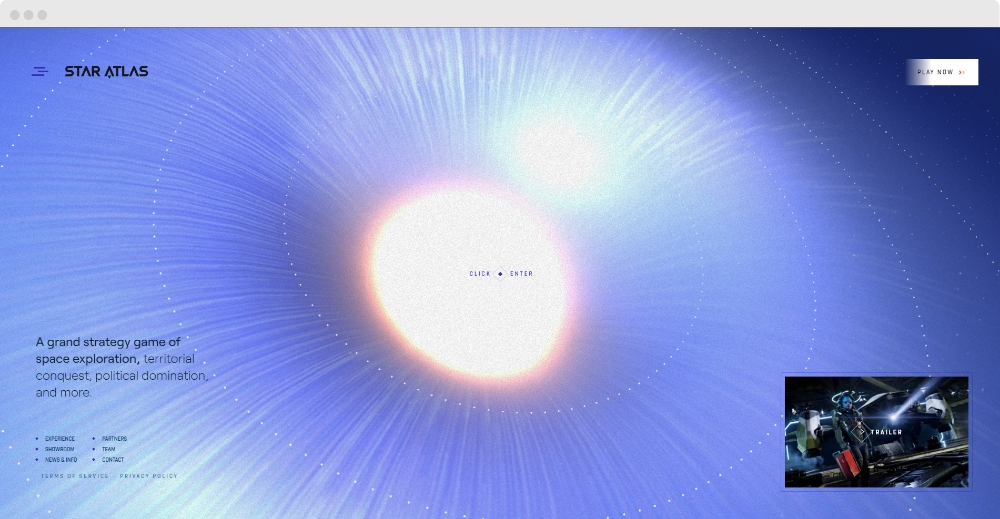

Inspire-se com esses 7 exemplos de websites criativos

Já não é segredo para ninguém que a internet tem dominado os mais diferentes segmentos do mercado, fazendo com que a presença online seja essencial para qualquer empresa. Diante desse cenário, os gestores têm um importante desafio: se destacar em uma imensidão de conteúdo. Com o avanço da tecnologia, os sites estão ficando cada vez mais modernos, interativos e criativos. O que não faltam são ferramentas para atrair e cativar os usuários, e as marcas que não acompanharem esse movimento tendem a ficar para trás. Quer criar uma página de divulgação para a sua empresa, mas não sabe por onde começar? Não se preocupe, nós vamos te ajudar! Listamos 7 exemplos de websites criativos para você se inspirar. Confira abaixo!
Resn

O top 1 da nossa lista é um dos exemplos mais inspiradores e criativos quando o assunto é design de websites. Mas tanta inovação não é por acaso e nem foi conquistada de um dia para o outro. A página é o cartão de visita da agência internacional Resn, que está presente nos Estados Unidos, Europa e na Ásia. O website combina tecnologias 3D, imagens interativas, som ambiente e layout clean em uma experiência realmente impactante e hipnotizante! Mais artístico do que informativo, a página pode te distrair por um bom tempo com o seu diamante animado.
Star Atlas
Star Atlas é um jogo online de estratégia baseado em blockchain, com tema espacial. Esse imenso metaverso para múltiplos jogadores está ambientado em um futuro distante, mais precisamente, no ano de 2620.
Não entendeu muito bem? Calma. Nós vamos explicar. O jogo funciona por meio de um sistema que permite rastrear o envio e recebimento de determinadas informações via internet. Isso é blockchain.
Já o metaverso é um espaço virtual compartilhado que as pessoas podem acessar usando óculos especiais, por exemplo.
Bem, uma proposta arrojada como essa, totalmente plugada no que há de mais inovador em tecnologia, não poderia ter um site comum. Por isso, vale a pena acessar o https://staratlas.com/
Logo de início, o visual “cósmico” chama a atenção do visitante. Estamos imersos numa grande paisagem espacial estilizada que remete aos melhores filmes de ficção científica e que evoca toda emoção associada à exploração interplanetária.
A navegação é simples, com um indicador sutil do que o usuário deve fazer para prosseguir, a opção de assistir a um trailer e um menu para quem quer entrar de cabeça no jogo.
Quando clicamos para entrar, depois de uma explosão de luz branca, somos conduzidos a um site de navegação diferenciada, que utiliza o “scroll” (ou seja, mover a tela para baixo com o mouse) para revelar um universo de planetas e naves espaciais em movimento. Por fim, visualizamos os instigantes personagens. Depois, é só se aventurar e jogar.